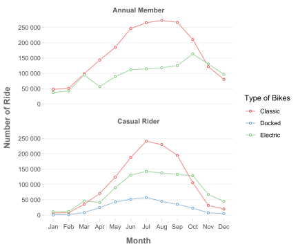

Usage of Cyclistic Bikes - Annual Members vs. Casual Riders
Faqiang
2022-05-30
1 Question
This report here is to answer the question: How do annual members and casual riders use Cyclistic bikes differently?
2 Data Source
The data has been made available by Motivate International Inc under this license. And it is downloadable from this link.
The data are organized by month from April, 2020 to the most recent month, and each zip file contain one month’s data.
3 Data Cleaning
- The data was downloaded and unzipped.
- The integrity of the data was verified both with manual checking in Excel and with semiautomatic RStudio.
4 Analysis
4.1 Number of Rides in different Seasons
path <- list.files(path = "csv",
pattern = ".csv",
full.names = TRUE)
#use map to read each file,transform and combine. This is faster than combining first and then transform.
# Due to the large file size, select only a few column to import
tripdata_raw <- map(path, read_csv,id = "month") %>%
map(~select(.x, month, rideable_type, member_casual)) %>%
map(~count(.x, month,rideable_type, member_casual)) %>%
bind_rows()
tripdata <- tripdata_raw %>%
separate(month, into = c(NA, "year_month")) %>%
mutate(
year_month = month(ymd(year_month,truncated = 2),label = T),
member_casual = str_replace_all(member_casual,c("casual" = "Casual Rider","member"="Annual Member" )),
rideable_type = str_to_title(str_remove(rideable_type,"_bike"))
)
tripdata %>%
count(member_casual,year_month,wt = n) %>%
ggplot(aes(year_month,n,group = member_casual,color = member_casual))+
geom_line(alpha = .5)+
geom_point(size = 2,color = "white")+
geom_point(size = 1.2,shape = 21,fill = "white")+
scale_y_continuous(labels = scales::label_number(),n.breaks = 6)+
scale_color_brewer("",palette = "Set1")+
labs(
x = "Month",
y = "Number of Ride",
)+
theme(
panel.grid.major.y = element_line(color = "grey90"),
panel.border = element_blank()
)
- Both annual memebers and casual riders ride much more in the summer than in the winter.
- In the summer peak of July, there are more ride from casual rider than annual members.
- In the other three seasons (spring, fall and winter), there are more ride from annual members than from casual rides.
4.2 Preference of bike types
tripdata %>%
ggplot(aes(year_month,n,group = rideable_type,color = rideable_type))+
geom_line(alpha = .5)+
geom_point(size = 2,color = "white")+
geom_point(size = 1.2,shape = 21,fill = "white")+
scale_y_continuous(labels = scales::label_number(),n.breaks = 6)+
scale_color_brewer(palette = "Set1")+
facet_wrap(~member_casual,ncol = 1,strip.position = "top")+
labs(
x = "Month",
y = "Number of Ride",
color = "Type of Bikes"
)+
theme(
panel.grid.major.y = element_line(color = "grey90"),
panel.border = element_blank()
)
- In the summer, classic bike is the most popular among both annual memebers and casual riders.
- In the winter, electric bike becomes more popular among both annual members and casual riders, due to the coldness in the winter.
4.3 Duration of a Single Ride
## read full data of two month
tripdata_2month <- read_csv(c("csv/202201-divvy-tripdata.csv", "csv/202107-divvy-tripdata.csv"),id = "month") %>%
separate(month, into = c(NA, "year_month")) %>%
mutate(
year_month = month(ymd(year_month,truncated = 2),label = T),
member_casual = str_replace_all(member_casual,c("casual" = "Casual Rider","member"="Annual Member" )),
rideable_type = str_to_title(str_remove(rideable_type,"_bike"))
)
# duration
duration <- tripdata_2month %>%
mutate(
duration_min = int_length(interval(started_at,ended_at))/60,
.after = ended_at
) %>%
filter(duration_min<150) %>%
slice_sample(n = 30000)
duration %>%
ggplot(
aes(
year_month,
duration_min,
color = member_casual,
fill = after_scale(alpha(color,.1))
)
)+
geom_boxplot(width = 1,position=position_dodge(1),varwidth = T,outlier.size = .5,size = .5)+
scale_color_brewer(palette = "Set1")+
scale_y_continuous(trans = "sqrt",breaks = c(1,5,10,seq(20,160,20)))+
facet_wrap(vars(member_casual))+
labs(
x = "",
y = "Duration (min)"
)+
theme(
axis.text.x = element_text(size = 12,face = "bold"),
legend.position = "none",
#panel.border = element_blank(),
panel.grid.major.y = element_line(color = "grey80",linetype = "dotted")
)
- A single ride usually lasts 5 - 25 minutes.
- The duration medium of the ride is slightly longer in the summer (July) than in the winter (January).
- Causal riders tends to rider slightly longer than annual members, both in winter and summer.
4.4 Usage in a Day
peaktime <- tripdata_2month %>%
mutate(day = wday(started_at,label = T)) %>%
group_by(member_casual,year_month) %>%
slice_sample(n = 10000) %>%
ungroup()
peaktime %>%
ggplot(
)+
geom_density(
aes(
hour(started_at),
color = member_casual,
fill = after_scale(alpha(color,.05))
)
)+
labs(
x = "Time in a Day (24h)",
y = "Riding Frequency",
color = ""
)+
scale_x_continuous(breaks = scales::breaks_width(4))+
scale_color_brewer(palette = "Set1")+
facet_grid(day~year_month)+
theme(
axis.text.y = element_blank(),
legend.position = "top",
axis.ticks.y = element_blank()
)
- On the weekdays (Mon-Fri), annual members tend to ride more during both the morning and afternoon rush hours (7-8 am & 4-5 pm), while casual riders tend to ride more during the afternoon rush hours (4-5pm).
- On the weekends (Sat & Sun), both casual riders and annual members tend to use it more around late morning and early afternoon, as well as midnight, especially on Saturday night.
4.5 Geographic Distribution
tripdata_2month %>%
group_by(year_month,member_casual) %>%
slice_sample(n = 2000) %>%
ungroup() %>%
drop_na(start_lat:end_lng) %>%
filter(start_lat<45 & start_lng < -86) %>%
mutate(across(start_lat:end_lng,~round(.x, digits = 2))) %>%
distinct(start_lat, start_lng, end_lat, end_lng,.keep_all = T) %>%
ggplot()+
geom_segment(
aes(y = start_lat, x = start_lng, yend = end_lat, xend = end_lng),
alpha=.2
)+
facet_grid(year_month~member_casual)+
labs(
x = "Longitude",
y = "Latitude"
)
- The distribution of annual member usage is more compact and more focus in downtown area.
- The distribution of casual rider usage is more spread out.
5 Summary
Season
- Both annual memebers and casual riders ride much more in the summer than in the winter.
- In the summer peak of July, there are more ride from casual rider than annual members.
- In the other three seasons (spring, fall and winter), there are more ride from annual members than from casual rides.
Bike Type
- In the summer, classic bike is the most popular among both annual memebers and casual riders.
- In the winter, electric bike becomes more popular among both annual members and casual riders, due to the coldness in the winter.
Duration
- A single ride usually lasts 5-25 minutes.
- The duration medium of the ride is slightly longer in the summer (July) than in the winter (January).
- Causal riders tends to rider slightly longer than annual members, both in winter and summer.
Usage in a Day
- On the weekdays, members tend to ride more during both the morning and afternoon rush hours (7-8 am & 4-5 pm), while casual riders tend to ride more during the afternoon rush hours (4-5pm).
- On the weekends, both casual riders and members tend to use it more around late morning and early afternoon, as well as midnight, especially on Saturday night.
Geographic Distribution
- The distribution of annual member usage is more compact and more focus in downtown area.
- The distribution of casual rider usage is more spread out.